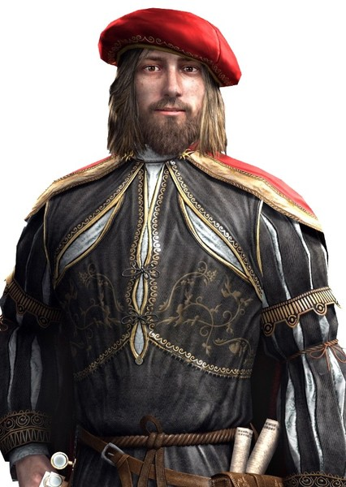
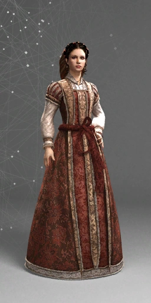

Personagens Principais
1 / 4

Ezio Auditore da Firenze (1459 – 1524) foi um nobre Florentino
durante a Renascença e, sem o conhecimento da maioria dos
historiadores e filósofos, o Mentor da Irmandade Italiana dos
Assassinos, um título que ocupou de 1503 a 1513. Ele também é um
ancestral de William e Desmond Miles, assim como de Clay Kaczmarek.
2 / 4

Desmond Miles foi um membro da Ordem dos Assassinos e um descendente
de numerosas linhagens familiares que juraram lealdade aos Assassinos;
incluindo indivíduos como Aquilus, Altaïr Ibn-La'Ahad, Ezio Auditore
da Firenze, e a família Kenway.
3 / 4

Leonardo di ser Piero da Vinci (1452 – 1519) foi um anatomista, escultor,
inventor, cartógrafo, pintor, botânico, engenheiro, arquiteto,cientista e
matemático da Renascença. Ele é amplamente considerado pelos estudiosos,
engenheiros e artistas de todo o mundo como sendo uma das maiores mentes da
história.
4 / 4

Claudia Auditore da Firenze (1461 – desconhecido) foi uma nobre florentina
durante a Renascença, e um membro da Ordem dos Assassinos. Ela foi a irmã de
Ezio Auditore da Firenze, que se tornou o Mentor dos Assassinos Italianos.